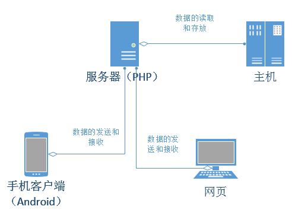
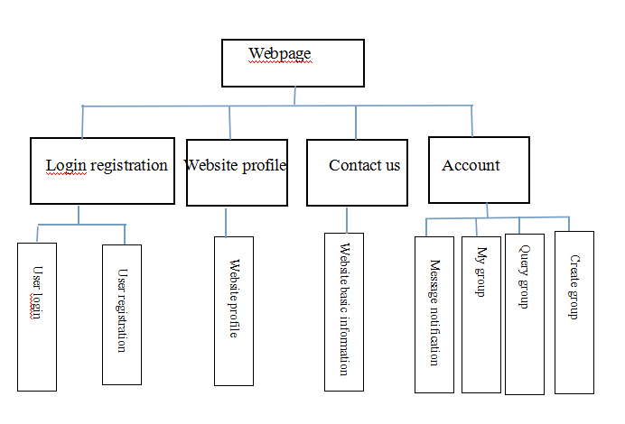

In order to enhance the communication the exchange between Chinese University and University in English, students can learn the knowledge of their own during the practice, so set up the Sino British Joint Laboratory. Sino British Joint Laboratory is China Zhengzhou University of Light Industry Institute of international education, and University of Napier in the United Kingdom were co founded, the purpose is for students in the learning activities organized during, class and learn the convenient, therefore, the development of should be a kind of application software.
In order to facilitate the university students in learning and better learning and a better life, we developed two products into web version and mobile client in two versions, which features include: students organized activities, curriculum inquiry, empty classroom inquiry.
The web version can launch the activity, the creation of the group, the dialogue between the group, the cancellation of the group etc..
Mobile client and Web side functions for synchronization. With the same function and different is a mobile client for mobile phones, mobile client with query curriculum schedule, the establishment of group activities, group empty classroom inquiry.
Website based on PHP and MySQL technology development, but also used in Windows, Unix, Linux platform, running environment is as follows:
(1), Windows platform
PHP4/PHP5 + IIS/Apache + MySQL3/4/5
In the windows environment, using Apache+php5+mysql5+ZendOptimizer can achieve the best use of performance.2),
（2） Linux/Unix platform
PHP4/PHP5 + Apache + MySQL3/4/5 (PHP must run in the non security mode)
Recommended platform: Linux + Apache2.2 + PHP5.2 + MySQL5.0
Allow_url_fopen
GD extended library
MySQL extended library
System function - phpinfo, dir
(1) hardware requirements: all types of Android phone or tablet.
(2) software environment: Android version of android4.0 above
Software development is divided into two groups, a foreign group led the development of web pages, a Chinese team to develop Android mobile client. In the development process according to the member will of the distribution, Web development of the British team and the Chinese team to develop the joint development. Achieve convenient exchange. The development of the database in the common completion of the two sides. The mobile client has the Chinese team to carry out the development. The link between the client and the database is completed.
The implementation of the project requires the same as the function of the mobile client, and can synchronize. The following is the overall structure of the web page and mobile link server.
The mobile client and the Webpage carries on the data with the server PHP, the PHP obtains the data to carry on the storage to the database.
When the user request data, the user sends a request command to the server (PHP), the server (PHP) were called from the call data in the database (MySQL) to the user to see the data, and returned to the user through the server, indicated by the client.
The project development time is six months, the project implementation divides into two stages: the year ago stage and the year after stage. Years ago stage: Chinese students of Zhengzhou University of Light Industry visited Napier students' initial questions. Years later were the subject of development work, by the end of May, early June a British Napier students students to visit China, and finally into the development work and group evaluation.
This software is facing the college students to develop a school of application software, the software in the face of the object is college students, by Zhengzhou University of light industry and the Dragon Northumbria University students were investigated: we found a software can solve these problems: class, the students in the classroom is not fixed, the curriculum more easily remember the classroom, paper curriculum easily lost. Like the students can not find the empty classroom, students organize information through the association of information publicity is not timely issue. Software used in schools should have a lot of market.
Through mobile app application survey, we downloaded through 360 mobile phone software, millet shop, Ann Zhuo mobile application store, pea pods and other application soft download we summarize, the organization launched a campaign, and curriculum table query and an empty classroom inquires the development of app, belong to the first, software innovation.
(1).Web design used in the structure of the Bootstrap, Twitter from the Bootstrap, is currently the most popular front frame. Bootstrap is based on CSS, HTML, JAVASCRIPT, it is simple and flexible, making Web development more fast. It is developed by Mark designer Otto Jacob and Thornton Twitter, and is a CSS/HTML framework. Bootstrap comes with 13 JQuery plug-ins, these plug-ins for the Bootstrap component to give the life ". Bootstrap class used in:
(2).Web function module flow chart
Framework Application is able to compile extremely rich and innovative applications through the provision of open development platform. It is free to use the advantages of hardware, access to location information, running background services, setting alarm clock, to add a notification to the status bar, etc., a lot of. Use the framework APIs completely using the core application. The application architecture is designed to simplify component reuse, any application can publish his function and any other applications can use these functions (need to obey the framework of the implementation of security restrictions). Replace component. All applications are actually a set of services and systems, including: view (View) - rich, extensible view collection, can be used to build an application. Include include lists, grid, text box, button, or even embedded web browser content providers, content providers, the application can access other applications (such as contacts) data, or share their data Explorer (resource manager, providing access to non code resources, such as localized string, graphics and layout file notification manager notification manager, make all the applications to the status bar display custom warning activity manager (activity manager - manage applications students life cycle and provide general navigation rollback feature.
User login registration: students according to their student ID, name, email, professional grade, register. Mailbox and student ID is the only field, according to the registration information of students, and the school register information matching, if agreement is registered successfully, or failed to register. After the group of users registered successfully, the next time you can use their own mailbox to log directly. My team: my group is divided into creating groups and joining groups.. Users can according to their own choice group create and join, if it is the initiator of the group, the group created activities and time to choose the timing of the change and cancellation group. If the user joins a group, then the group can join, comment, and opt for the group activity, and opt for and exit etc.. The course of the inquiry: the curriculum is a kind of life calendar that students have to learn in school.. Because the curriculum is very important. The curriculum is divided into two aspects: the automatic inquiry of the curriculum, to facilitate the students themselves to import the curriculum table so as to reduce the operation of the user. The change of the curriculum is intended for the students to change their course.. Students can add their own courses, delete and modify the course. Inquiry into the empty classroom: the classroom inquiry is divided into two parts: the inquiry of the empty classroom, the time inquiry of the self-study. Can be the root of the two conditions for the empty classroom location, and your time to study, easy and students on the self-study.
Slim - Web PHP development of the micro framework, Slim is a web based PHP development of the micro framework, you can write simple and powerful web applications and API. Slim interface simple and intuitive, the document is also very detailed.
Code example:
$app->get (function) ('/', use ($app) {
Var_dump ($app);
});
Characteristic
Strong URL HTTP routing
Scalable intermediate layer and hook architecture
Error handling and debugging
Use Composer for installation
First install Composer in your project:
-s https://getcomposer.org/installer curl PHP
Then create a file named composer.json in your project root directory:
{
"Require": {
"Slim/slim": "2.*"
}
}
Install by composer:
Composer.phar install PHP
Add the following code to the application's index.php file:
< PHP?
'vendor/autoload.php'require;
System dependence
5.3.0 PHP or above
If you need to encrypt the cookies, you need to expand the mcrypt.
World Hello
Generate an Slim application instance, define routing, and run application:
$app = \Slim\Slim new ();
$app->get ('/hello/: name', function ($name) {
Hello "$name, echo";
});
$app->run ();
To configure
The Slim framework provides two ways of configuring them. One is to set the parameters in the instance generation, and the other is after the build instance.. All settings parameters can be passed to the Slim constructor in the form of an instance of the generation (constructor). All the setting parameters can be after the instance generation get or modify, but some settings and can not simply rely on application config function to complete. Therefore, it is necessary to behind additional instructions. Before I list these valid settings, I would like to simply introduce how to define or check the Slim application parameter settings..
Instance generation
When a defined set of instances, only need to pass an associative array to the Slim constructor.
$app = Slim new (array ( 'debug'= > true ));
After the instance generation
To define parameters setting in the wake of the instance generation, most of the settings can be config function using the examples of the application; config function the first parameter is the name of the setting, the second parameter is a set of parameter values.
$app->config ('debug', false);
Simultaneously set multiple parameters:
$app->config (array (
'debug'= > true,
'templates.path'= >'../templates'
));
Get the application of a setup:
$settingValue = $app->config ('templates.path
(1) interface design:
(2) function design:
Database design principles: the principles of database design a table corresponds to an instance and fields are not subdivided (paradigm) and to set up a primary key, uniquely identifies the record.
Background management is mainly used for the information management of the front desk, such as the creation of the group, the inquiry of the classroom, the insertion of the curriculum table, the new group, the update, delete and so on.. Be able to quickly operate the website database and file, so that the contents of the front desk can be updated and adjusted in time.. Background management is divided into four chunks: charts, management, documentation, comments exit
Chart management: user statistics, classroom statistics, group statistics, conference statistics. Chart management for the number of users of the management, the use of the classroom statistics, the group created quantitative statistics, the number of sessions gradually statistics.
Management: user management, group management, university management, curriculum management. User management background can management to the user and group management is the management of the group, the university management of some of the additions and deletions to the existing university to change the check work. Course table management to the creation of the curriculum, delete, modify the increase in operation.
The document is divided into: user development document, technical document, user document. The user document development document is the function and operation of the ordinary user to explain the difference.. Technical document is the document which is developed by the technical personnel, the main introduction uses the core structure, the special interface and the method. Development of the whole process for the development of the whole process of a development.
Comments: users can carry out evaluation of the site products, easy to update the.
1 website security testing
2 function test
3 database security testing
4 website basic function module testing
5 user information testing
6 user initiated activity testing
7 query function test
8 user information editing test
9 web connection test
10 website interface test
11 website pressure testing
Software testing two:
1, safety testing
2. Install and unload test
3, test the user interface (such as menus, dialog boxes, windows, and other gauge control layout, style is to meet customer requirements, the text is correct, whether the page beautiful, text, picture composition is perfect or not, whether the operation friendly etc..
UI's goal is to ensure that the user interface will pass the test object function to provide the corresponding access or browse for users. Ensure that the user interface is in line with the company or industry standards. Including user friendliness, user-friendly, easy to operate test.
4, function test
5, performance testing
6, compatible testing
7, regression testing
8, user experience test
9, hardware testing
10, interface testing
11, customer database